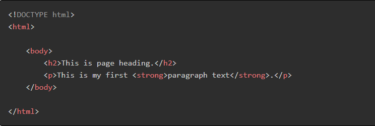

What is HTML Editors?
To write HTML code, we need an HTML editor, and we can do this with the help of a notepad on our computer. Some computers with different Operating-system have different text editors. But all text editors are used to write and save texts in various formats. In this lesson, you will learn how to write, save, and run HTML documents.
A web page is a text file in which a hypertext language is written according to HTML grammar. This HTML code is displayed by the browser converting it to a web page. Programs in which HTML code is written or modified are called HTML editors. Many specialized software applications are available online to edit HTML code and create web pages such as Adobe Dreamweaver, Bluefish, Google Web Designer, Sublime Text, etc.
Writing HTML Using Notepad
Step 1: Open Notepad
You can easily find Notepad in the list of programs.
Step 2: Write HTML code
After opening the Notepad, you can now write your HTML code on it. Here is a sample HTML code, for example.
Step 3: Save the File as HTML document
To save a file, go to the Notepad File menu and click the Save As option. After that, it will show you a popup window where you have to select the file path, file name, and file type to save this file. You have to type the file name with the .html extension to save the file as an HTML document.
Step 4: Run the HTML Page in Your Browser
To run a saved HTML file, you only have to open the file in any web browser.